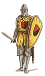 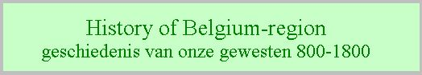 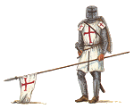
Heraldiek
behandelde topics:
Het ontstaan van het wapen van de Spaanse Habsburgers
Schematisch overzicht van het ontstaan van het wapen van Filips de Goede (hertog van Bourgondië 1419-1467, heraldische stamboom)
Schematisch overzicht van het ontstaan van het wapen van keizer Karel V (koning van Spanje 1516-1555, heraldische stamboom)
Opzoeking van een onbekend wapen van Hongarije-Bohemen en Habsburg
Opzoeking heraldische voorstelling van de rederijkerskamer 'de Violieren' uit Antwerpen
de nieuwe wapens van het Belgische koninghuis
Linken:
Via Google en Wikipedia zijn zeer veel linken te vinden over allerlei heraldische onderwerpen, zowel in het Nederlands als in het Engels en het Frans.
zoektermen: oa.: heraldiek / wapen / heraldry / coat of arms / ...
Deze sites bevat zeer veel prachtige afbeeldingen van wapenschilden. (in het Engels)
Dit is de site met de blogs van Arnaud Bunel. (in het Frans)
heraldische terminologie in zes talen op Heraldica.org van Francois Velde:
http://www.heraldica.org/topics/glossary/atlas.htm
databanken:
databank van de geregistreerde wapens bij de Vlaamse Heraldische Raad (VHR):
https://www.sarovlaanderen.be/wapenregister
databank van de geregistreerde wapens bij het Heraldisch College van FV (Familiekunde Vlaanderen, vroeger VVF)
http://ariadnedatabank.be/hc/hc.php
databank van de geregistreerde wapens bij het CBG (Centrum voor Familiegeschiedenis, vroeger Centraal Bureau Genealogie)
software:
Drawshield van Karl Wilcox:
op deze site kan je heel gemakkelijk een wapenschild tekenen, of al wat moeilijker, een omschrijving ingeven en het programma tekent wat je beschrijft.
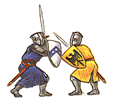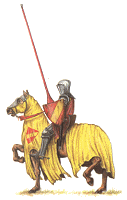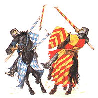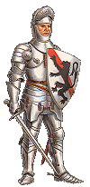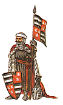
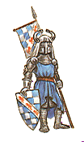 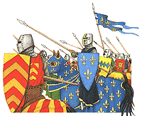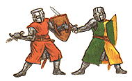 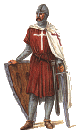
webmaster: Johan Andriessen
Wilrijk Belgium
©2023